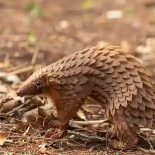

Pangolin
Critically Endangered
Estimated remaining: Unknown (all 8 species declining)
Habitat
Tropical forests, savannas, and grasslands across Asia and Africa. Some species burrow underground, while others nest in trees.
Threats
- Illegal wildlife trade (scales and meat)
- Habitat destruction from agriculture and logging
- Road construction and human encroachment
Conservation efforts
All eight species are protected under CITES Appendix I, banning international trade. Conservationists are working on habitat protection, anti-poaching patrols, and public awareness campaigns. Pangolins are also featured in global wildlife trafficking enforcement efforts.